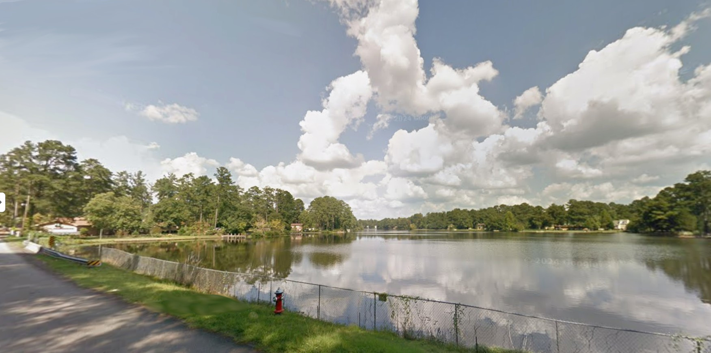

The History of Springwood Lake, South Carolina
PLEASE CONTACT US TO UPDATE OR EXPAND UPON THE INFO ON THIS PAGE.
Springwood Lake was created and flooded pursuant to an Agreement dated October 19, 1956 between Edwin H. Cooper, Trustee, W.C. Powell, Joseph Keels, Eunice Neeley, John Gregg McMaster and Lonnie B. Nelson and recorded in the Office of the Clerk of Court for Richland County in Deed Book 196 at Page 409. Others who signed on the document were Bertran T. Richardson, Evalyn R. Richardson, Otis E. Sims, John L. Wages and Rosilyn D. Outen.
As more information is researched and becomes available, Friends of Springwood Lake will update it.